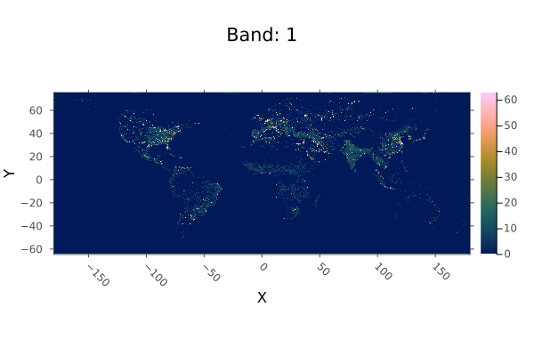
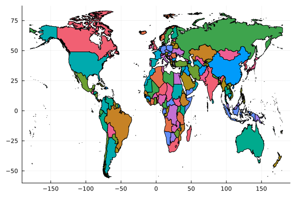
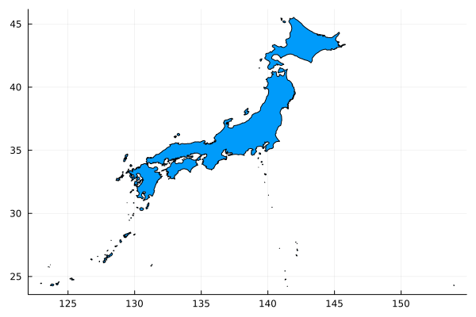
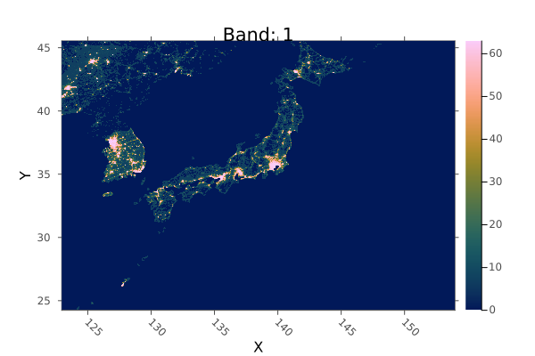
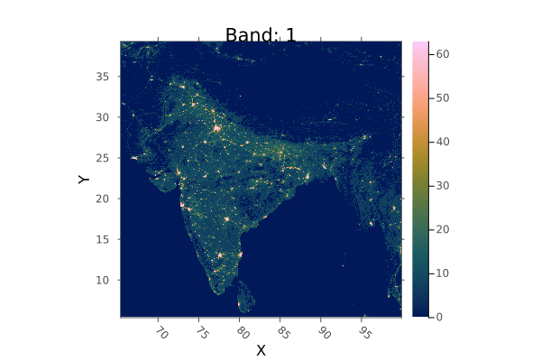
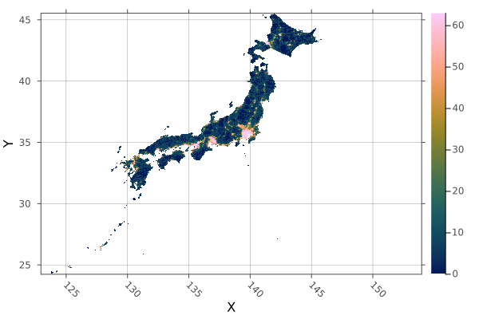
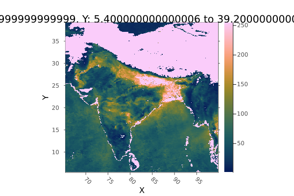
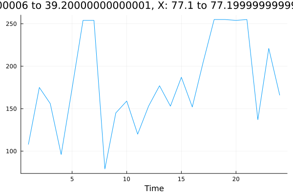

library(reticulate)
use_condaenv("geopython")Julia adalah salah satu programming language yang sedang populer saat ini. Julia pandang sebagai salah satu jenis interpreter yang handal karena menggunakan teknik paralel computing yang memungkinkannya mengeksekusi dan mengolah data dalam jumlah besar dengan kecepatan yang jauh melebihi python bahkan di klaim lebih baik dari R.
using Pkg
Pkg.add("Plots")
Pkg.add("Statistics")
Pkg.add("DataFrames")
Pkg.add("Shapefile")
Pkg.add("Dates")
Pkg.add("Rasters")Code di atas adalah cara menginstall package di Julia dengan menggunakan shell pada notebook. Setelah memastikan bahwa paket ini telah terinstall, selanjutnya mulai mengimport packages atau module yang akan digunakan . Untuk memastikan kita memiliki data yang akurat, kita akan menggunakan data dari situs berikut ini: Harmonize Ningttime Light. Data pada situs ini merupakan data yang biasa digunakan untuk menganalisis persoalan sosial ekonomi dari setiap negara-negara.
Untuk mendemonstrasikan kesamaan dan ke-umuman, kita akan menggunakan data dari: MODIS Aerosol Optical Depth (AOD) Juga kita akan menggunakan NDVI dari: NDVI data NASA. Dan sebagai tambahan kita akan menggunakan shapefile dari: Wri Shapefile. Salah satu rujukan kita juga dalam membuat demonstrasi ini adalah berasal dari youtube channel berikut ini: Geospatial data in Julia with Rasters.jl
# Mengimport module
using Rasters, Plots, Statistics, Shapefile, DataFrames, DatesMemuat .tif file sebagai raster:
import ArchGDAL
path_to_VIIRS = "/Users/chakraroy/Documents/CharObsNote/20_Qmd_Notes/BlogKu/data/Harmonized_DN_NTL_2020_simVIIRS.tif""/Users/chakraroy/Documents/CharObsNote/20_Qmd_Notes/BlogKu/data/Harmonized_DN_NTL_2020_simVIIRS.tif"raster = Raster(path_to_VIIRS, lazy=true, checkmem=false)╭─────────────────────────────╮
│ 43201×16801 Raster{UInt8,2} │
├─────────────────────────────┴────────────────────────────────────────── dims ┐
↓ X Projected{Float64} LinRange{Float64}(-180.00416666665, 179.99583189335004, 43201) ForwardOrdered Regular Intervals{Start},
→ Y Projected{Float64} LinRange{Float64}(74.99583333334999, -65.00416610665, 16801) ReverseOrdered Regular Intervals{Start}
├──────────────────────────────────────────────────────────────────── metadata ┤
Metadata{Rasters.GDALsource} of Dict{String, Any} with 4 entries:
"units" => ""
"offset" => 0.0
"filepath" => "/Users/chakraroy/Documents/CharObsNote/20_Qmd_Notes/BlogKu/dat…
"scale" => 1.0
├────────────────────────────────────────────────────────────────────── raster ┤
extent: Extent(X = (-180.00416666665, 180.00416522665003), Y = (-65.00416610665, 75.00416666665))
crs: GEOGCS["WGS 84",DATUM["WGS_1984",SPHEROID["WGS 84",6378137,298.257223563,AUTHORITY["EPSG","7030"]],AUTHORITY["EPSG","6326"]],PRIMEM["Greenwich",0,AUTHORITY["EPSG","8901"]],UNIT["degree",0.0174532925199433,AUTHORITY["EPSG","9122"]],AXIS["Latitude",NORTH],AXIS["Longitude",EAST],AUTHORITY["EPSG","4326"]]
filename:
└──────────────────────────────────────────────────────────────────────────────┘plot(raster)

Indexing
Index dengan kolom dan nomor baris. Karena raster yang digunakan adalah single band, index band-nya akan selalu sama dengan 1.
raster[10, 10, 1]0x00raster[1000, 1000, 1] |> Int0Indexing dengan logitude dan latitude
raster[X(Near(77.1025)), Y(Near(28.7041))]0x3fraster[X(Near(77.1025)), Y(Near(28.7041))] |> Int63Shapefiles
Kita akan melakukan pengolahan spahefile untuk analisis, croping maupun statistik. Kita akan menggunakan shapefile dari: https://github.com/wri/wri-bounds
shp = Shapefile.Table("/Users/chakraroy/Documents/CharObsNote/20_Qmd_Notes/BlogKu/data/world_shapefile/in_primary_countries.shp") |> DataFrame193×29 DataFrame
Row │ geometry ADM0_A3 abbrev continent formal_nam ⋯
│ Polygon String? String? String? String? ⋯
─────┼──────────────────────────────────────────────────────────────────────────
1 │ Polygon(1530 Points) AFG Afg. Asia Islamic State o ⋯
2 │ Polygon(1642 Points) AGO Ang. Africa People's Republ
3 │ Polygon(554 Points) ALB Alb. Europe Republic of Alb
4 │ Polygon(51 Points) AND And. Europe Principality of
5 │ Polygon(796 Points) ARE U.A.E. Asia United Arab Emi ⋯
6 │ Polygon(4696 Points) ARG Arg. South America Argentine Repub
7 │ Polygon(433 Points) ARM Arm. Asia Republic of Arm
8 │ Polygon(108 Points) ATG Ant.B. North America Antigua and Bar
⋮ │ ⋮ ⋮ ⋮ ⋮ ⋱
187 │ Polygon(4166 Points) VNM Viet. Asia Socialist Repub ⋯
188 │ Polygon(1015 Points) VUT Van. Oceania Republic of Van
189 │ Polygon(132 Points) WSM Samoa Oceania Independent Sta
190 │ Polygon(1027 Points) YEM Yem. Asia Republic of Yem
191 │ Polygon(2207 Points) ZAF S.Af. Africa Republic of Sou ⋯
192 │ Polygon(1508 Points) ZMB Zambia Africa Republic of Zam
193 │ Polygon(766 Points) ZWE Zimb. Africa Republic of Zim
25 columns and 178 rows omittedUntuk membersihkan datanya, kita bisa melakukan remove setiap non complit data atau data yang hilang (missing data)
shp = dropmissing(shp)192×29 DataFrame
Row │ geometry ADM0_A3 abbrev continent formal_nam ⋯
│ Polygon String String String String ⋯
─────┼──────────────────────────────────────────────────────────────────────────
1 │ Polygon(1530 Points) AFG Afg. Asia Islamic State o ⋯
2 │ Polygon(1642 Points) AGO Ang. Africa People's Republ
3 │ Polygon(554 Points) ALB Alb. Europe Republic of Alb
4 │ Polygon(51 Points) AND And. Europe Principality of
5 │ Polygon(796 Points) ARE U.A.E. Asia United Arab Emi ⋯
6 │ Polygon(4696 Points) ARG Arg. South America Argentine Repub
7 │ Polygon(433 Points) ARM Arm. Asia Republic of Arm
8 │ Polygon(108 Points) ATG Ant.B. North America Antigua and Bar
⋮ │ ⋮ ⋮ ⋮ ⋮ ⋱
186 │ Polygon(4166 Points) VNM Viet. Asia Socialist Repub ⋯
187 │ Polygon(1015 Points) VUT Van. Oceania Republic of Van
188 │ Polygon(132 Points) WSM Samoa Oceania Independent Sta
189 │ Polygon(1027 Points) YEM Yem. Asia Republic of Yem
190 │ Polygon(2207 Points) ZAF S.Af. Africa Republic of Sou ⋯
191 │ Polygon(1508 Points) ZMB Zambia Africa Republic of Zam
192 │ Polygon(766 Points) ZWE Zimb. Africa Republic of Zim
25 columns and 177 rows omittedkemudian kita bisa visualisasikan datanya dalam peta
plot(shp.geometry)
Kita bisa memilih negara atau polygon yang ingin kita tampilkan dengan operasi findall :
japan_index = findall(x -> x == "Japan", shp.name)1-element Vector{Int64}:
87Visualisasi polygon dari wilayah atau negara yang dipilih
plot(shp.geometry[japan_index])
Cropping
Terdapat 2 cara untuk cropping, sebagaimana selanjutnya di bawah ini.
Cropping dengan Shapes
japan = crop(raster; to = shp.geometry[japan_index])╭───────────────────────────╮
│ 3724×2556 Raster{UInt8,2} │
├───────────────────────────┴──────────────────────────────────────────── dims ┐
↓ X Projected{Float64} LinRange{Float64}(122.94583212155003, 153.97083199745006, 3724) ForwardOrdered Regular Intervals{Start},
→ Y Projected{Float64} LinRange{Float64}(45.50416678465, 24.212500203149993, 2556) ReverseOrdered Regular Intervals{Start}
├──────────────────────────────────────────────────────────────────── metadata ┤
Metadata{Rasters.GDALsource} of Dict{String, Any} with 4 entries:
"units" => ""
"offset" => 0.0
"filepath" => "/Users/chakraroy/Documents/CharObsNote/20_Qmd_Notes/BlogKu/dat…
"scale" => 1.0
├────────────────────────────────────────────────────────────────────── raster ┤
extent: Extent(X = (122.94583212155003, 153.97916533075005), Y = (24.212500203149993, 45.512500117950005))
crs: GEOGCS["WGS 84",DATUM["WGS_1984",SPHEROID["WGS 84",6378137,298.257223563,AUTHORITY["EPSG","7030"]],AUTHORITY["EPSG","6326"]],PRIMEM["Greenwich",0,AUTHORITY["EPSG","8901"]],UNIT["degree",0.0174532925199433,AUTHORITY["EPSG","9122"]],AXIS["Latitude",NORTH],AXIS["Longitude",EAST],AUTHORITY["EPSG","4326"]]
filename:
└──────────────────────────────────────────────────────────────────────────────┘Kita akan mendapatkan raster baru, dan kita plot seperti di bawah ini:
plot(japan)
Crop dengan Bounds
bounds = X(Rasters.Between(65.39, 99.94)), Y(Rasters.Between(5.34, 39.27)) #bounding box↓ X Between((65.39, 99.94)), → Y Between((5.34, 39.27))raster[bounds...] |> plot
Masking
japan_masked = mask(japan, with = shp.geometry[japan_index])╭───────────────────────────────────────────╮
│ 3724×2556 Raster{Union{Missing, UInt8},2} │
├───────────────────────────────────────────┴──────────────────────────── dims ┐
↓ X Projected{Float64} LinRange{Float64}(122.94583212155003, 153.97083199745006, 3724) ForwardOrdered Regular Intervals{Start},
→ Y Projected{Float64} LinRange{Float64}(45.50416678465, 24.212500203149993, 2556) ReverseOrdered Regular Intervals{Start}
├──────────────────────────────────────────────────────────────────── metadata ┤
Metadata{Rasters.GDALsource} of Dict{String, Any} with 4 entries:
"units" => ""
"offset" => 0.0
"filepath" => "/Users/chakraroy/Documents/CharObsNote/20_Qmd_Notes/BlogKu/dat…
"scale" => 1.0
├────────────────────────────────────────────────────────────────────── raster ┤
extent: Extent(X = (122.94583212155003, 153.97916533075005), Y = (24.212500203149993, 45.512500117950005))
missingval: missing
crs: GEOGCS["WGS 84",DATUM["WGS_1984",SPHEROID["WGS 84",6378137,298.257223563,AUTHORITY["EPSG","7030"]],AUTHORITY["EPSG","6326"]],PRIMEM["Greenwich",0,AUTHORITY["EPSG","8901"]],UNIT["degree",0.0174532925199433,AUTHORITY["EPSG","9122"]],AXIS["Latitude",NORTH],AXIS["Longitude",EAST],AUTHORITY["EPSG","4326"]]
└──────────────────────────────────────────────────────────────────────────────┘
↓ → 45.5042 45.4958 45.4875 … 24.2292 24.2208 24.2125
122.946 missing missing missing missing missing missing
⋮ ⋱ ⋮
153.971 missing missing missing missing missing missingplot(japan_masked)
Menghitung summary statistics
sum(skipmissing(japan_masked)) |> Int |> println6244738mean(skipmissing(japan_masked)) |> Float32 |> println11.361134median(skipmissing(japan_masked)) |> Int |> println7Zonal Statistics
Menghitung summary statistics untuk seluruh zone
sol_by_country = zonal(sum, raster; of=shp.geometry)192-element Vector{Union{Missing, UInt64}}:
0x000000000007fd02
0x00000000003394fd
0x000000000005542c
0x00000000000040cb
0x00000000001846bc
0x0000000000942949
0x0000000000037332
0x000000000000251f
0x0000000000611fe2
0x00000000000e2ef9
⋮
0x0000000000000db5
0x00000000003e0548
0x000000000032bbee
0x000000000000183c
0x00000000000017fe
0x00000000000a5fa4
0x000000000060328a
0x000000000021abee
0x00000000000ba825shp.sol = Int.(sol_by_country);sort(shp, :sol, rev=true)192×30 DataFrame
Row │ geometry ADM0_A3 abbrev continent forma ⋯
│ Polygon String String String Strin ⋯
─────┼──────────────────────────────────────────────────────────────────────────
1 │ Polygon(36018 Points) USA U.S.A. North America Unite ⋯
2 │ Polygon(14262 Points) CHN China Asia Peopl
3 │ Polygon(36331 Points) RUS Rus. Europe Russi
4 │ Polygon(8542 Points) IND India Asia Repub
5 │ Polygon(11116 Points) BRA Brazil South America Feder ⋯
6 │ Polygon(68156 Points) CAN Can. North America Canad
7 │ Polygon(2726 Points) IRN Iran Asia Islam
8 │ Polygon(3640 Points) TUR Tur. Asia Repub
⋮ │ ⋮ ⋮ ⋮ ⋮ ⋱
186 │ Polygon(254 Points) FSM F.S.M. Oceania Feder ⋯
187 │ Polygon(12 Points) MCO Mco. Europe Princ
188 │ Polygon(9 Points) NRU Nauru Oceania Repub
189 │ Polygon(709 Points) KIR Kir. Oceania Repub
190 │ Polygon(1418 Points) MDV Mald. Seven seas (open ocean) Repub ⋯
191 │ Polygon(69 Points) TUV Tuv. Oceania Tuval
192 │ Polygon(211 Points) MHL M. Is. Oceania Repub
26 columns and 177 rows omittedDatacubes
Menggabungkan gambar-gambar untuk membentuk data cube
path = "/Users/chakraroy/Documents/CharObsNote/20_Qmd_Notes/BlogKu/data/MODISAQ/""/Users/chakraroy/Documents/CharObsNote/20_Qmd_Notes/BlogKu/data/MODISAQ/"filelist =readdir(path)24-element Vector{String}:
"MYDAL2_M_AER_OD_2020-01.tiff"
"MYDAL2_M_AER_OD_2020-02.tiff"
"MYDAL2_M_AER_OD_2020-03.tiff"
"MYDAL2_M_AER_OD_2020-04.tiff"
"MYDAL2_M_AER_OD_2020-05.tiff"
"MYDAL2_M_AER_OD_2020-06.tiff"
"MYDAL2_M_AER_OD_2020-07.tiff"
"MYDAL2_M_AER_OD_2020-08.tiff"
"MYDAL2_M_AER_OD_2020-09.tiff"
"MYDAL2_M_AER_OD_2020-10.tiff"
⋮
"MYDAL2_M_AER_OD_2021-04.tiff"
"MYDAL2_M_AER_OD_2021-05.tiff"
"MYDAL2_M_AER_OD_2021-06.tiff"
"MYDAL2_M_AER_OD_2021-07.tiff"
"MYDAL2_M_AER_OD_2021-08.tiff"
"MYDAL2_M_AER_OD_2021-09.tiff"
"MYDAL2_M_AER_OD_2021-10.tiff"
"MYDAL2_M_AER_OD_2021-11.tiff"
"MYDAL2_M_AER_OD_2021-12.tiff"dates = collect(Date(2020,1):Month(1):Date(2021, 12))24-element Vector{Date}:
2020-01-01
2020-02-01
2020-03-01
2020-04-01
2020-05-01
2020-06-01
2020-07-01
2020-08-01
2020-09-01
2020-10-01
⋮
2021-04-01
2021-05-01
2021-06-01
2021-07-01
2021-08-01
2021-09-01
2021-10-01
2021-11-01
2021-12-01bounds = X(Rasters.Between(65.39, 99.94)), Y(Rasters.Between(5.34, 39.27))↓ X Between((65.39, 99.94)), → Y Between((5.34, 39.27))aod_raster_list = [Raster(i, lazy = true)[bounds...] for i in path .* filelist]24-element Vector{Raster{UInt8, 2, Tuple{X{Projected{Float64, LinRange{Float64, Int64}, DimensionalData.Dimensions.Lookups.ForwardOrdered, DimensionalData.Dimensions.Lookups.Regular{Float64}, DimensionalData.Dimensions.Lookups.Intervals{DimensionalData.Dimensions.Lookups.Start}, DimensionalData.Dimensions.Lookups.NoMetadata, WellKnownText{GeoFormatTypes.CRS}, Nothing, X{Colon}}}, Y{Projected{Float64, LinRange{Float64, Int64}, DimensionalData.Dimensions.Lookups.ReverseOrdered, DimensionalData.Dimensions.Lookups.Regular{Float64}, DimensionalData.Dimensions.Lookups.Intervals{DimensionalData.Dimensions.Lookups.Start}, DimensionalData.Dimensions.Lookups.NoMetadata, WellKnownText{GeoFormatTypes.CRS}, Nothing, Y{Colon}}}}, Tuple{Band{DimensionalData.Dimensions.Lookups.Categorical{Int64, UnitRange{Int64}, DimensionalData.Dimensions.Lookups.ForwardOrdered, DimensionalData.Dimensions.Lookups.NoMetadata}}}, Matrix{UInt8}, Symbol, DimensionalData.Dimensions.Lookups.Metadata{Rasters.GDALsource, Dict{String, Any}}, UInt8}}:
UInt8[0x2f 0x2a … 0x3a 0x3e; 0x2e 0x25 … 0x3d 0x43; … ; 0xff 0xff … 0x33 0x39; 0xff 0xff … 0x35 0x3b]
UInt8[0x22 0x22 … 0x3d 0x47; 0x21 0x20 … 0x3c 0x45; … ; 0x38 0x6c … 0x2d 0x2f; 0x3d 0x79 … 0x2d 0x34]
UInt8[0x3b 0x2d … 0x40 0x37; 0x4c 0x2a … 0x41 0x40; … ; 0x0d 0xff … 0x43 0x44; 0x0c 0x0d … 0x47 0x4a]
UInt8[0x36 0x61 … 0x2f 0x35; 0x3f 0x56 … 0x2d 0x36; … ; 0x3d 0x43 … 0x3a 0x36; 0x44 0x3a … 0x30 0x3a]
UInt8[0x2f 0x28 … 0x32 0x31; 0x2e 0x3a … 0x35 0x30; … ; 0x0f 0x0e … 0x16 0x15; 0x0f 0x0f … 0x17 0x16]
UInt8[0x27 0x2a … 0x2b 0x36; 0x26 0x28 … 0x2c 0x24; … ; 0x0f 0x0e … 0x22 0x24; 0x0d 0x0e … 0x20 0x26]
UInt8[0x25 0x39 … 0x33 0x32; 0x22 0x3e … 0x32 0x31; … ; 0x0f 0x1b … 0x40 0x42; 0x0e 0x16 … 0x33 0x40]
UInt8[0xff 0x50 … 0xff 0xff; 0xff 0x58 … 0xff 0xff; … ; 0x1d 0xff … 0xff 0xff; 0x13 0xff … 0xff 0xff]
UInt8[0x21 0x2b … 0xff 0x24; 0x26 0x3a … 0xff 0x23; … ; 0x1a 0x14 … 0x13 0xff; 0x2f 0x0e … 0x14 0xff]
UInt8[0x26 0x29 … 0x22 0x25; 0x26 0x2b … 0x22 0x22; … ; 0x10 0x0d … 0x23 0x25; 0x0f 0x0e … 0x27 0x27]
⋮
UInt8[0x7d 0x37 … 0x35 0x2c; 0x71 0x4b … 0x35 0x2e; … ; 0x89 0xeb … 0x41 0x3f; 0x85 0x13 … 0x39 0x38]
UInt8[0x47 0x30 … 0x50 0x31; 0x3b 0x37 … 0x33 0x44; … ; 0x24 0x2f … 0x27 0x27; 0x23 0x2c … 0x27 0x2d]
UInt8[0xff 0xff … 0xff 0xff; 0xff 0xff … 0xff 0xff; … ; 0xff 0xff … 0xff 0xff; 0xff 0xff … 0xff 0xff]
UInt8[0x5e 0x56 … 0x23 0x1f; 0x5b 0x6a … 0x23 0x1f; … ; 0x0f 0x1a … 0x43 0x42; 0x12 0x11 … 0x3f 0x40]
UInt8[0x43 0x53 … 0x29 0x44; 0x42 0x56 … 0x45 0x42; … ; 0x12 0x16 … 0xff 0xff; 0x0f 0x0f … 0xff 0xff]
UInt8[0x4b 0x3b … 0x1b 0x1b; 0x3f 0x44 … 0x1a 0x1a; … ; 0x16 0x12 … 0x2f 0x2c; 0x14 0x0e … 0x2c 0x29]
UInt8[0x43 0x36 … 0x2b 0x2c; 0x41 0x35 … 0x2a 0x29; … ; 0x19 0x10 … 0x1e 0x1c; 0x12 0x13 … 0x1f 0x19]
UInt8[0x44 0x44 … 0x33 0x2b; 0x45 0x40 … 0x28 0x2a; … ; 0x0e 0x0d … 0xff 0xff; 0x0d 0x0b … 0xff 0xff]
UInt8[0x44 0x34 … 0x25 0x2e; 0x44 0x34 … 0x24 0x2a; … ; 0xff 0xff … 0x2a 0x27; 0xff 0xff … 0x2a 0x29]timestamps = collect(1:length(aod_raster_list))24-element Vector{Int64}:
1
2
3
4
5
6
7
8
9
10
⋮
16
17
18
19
20
21
22
23
24aod_series = RasterSeries(aod_raster_list, Ti(timestamps))╭───────────────────────────────────╮
│ 24-element RasterSeries{Raster,1} │
├───────────────────────────────────┴───────────────────────────── dims ┐
↓ Ti Sampled{Int64} [1, 2, …, 23, 24] ForwardOrdered Irregular Points
├─────────────────────────────────────────────────────────────── raster ┤
extent: Extent(X = (65.4, 99.89999999999999), Y = (5.400000000000006, 39.20000000000001))
missingval: 0x00
crs: GEOGCS["WGS 84",DATUM["WGS_1984",SPHEROID["WGS 84",6378137,298.257223563,AUTHORITY["EPSG","7030"]],AUTHORITY["EPSG","6326"]],PRIMEM["Greenwich",0,AUTHORITY["EPSG","8901"]],UNIT["degree",0.0174532925199433,AUTHORITY["EPSG","9122"]],AXIS["Latitude",NORTH],AXIS["Longitude",EAST],AUTHORITY["EPSG","4326"]]
└───────────────────────────────────────────────────────────────────────┘
1 … UInt8[0x2f 0x2a … 0x3a 0x3e; 0x2e 0x25 … 0x3d 0x43; … ; 0xff 0xff … 0x33 0x39; 0xff 0xff … 0x35 0x3b]
2 UInt8[0x22 0x22 … 0x3d 0x47; 0x21 0x20 … 0x3c 0x45; … ; 0x38 0x6c … 0x2d 0x2f; 0x3d 0x79 … 0x2d 0x34]
3 UInt8[0x3b 0x2d … 0x40 0x37; 0x4c 0x2a … 0x41 0x40; … ; 0x0d 0xff … 0x43 0x44; 0x0c 0x0d … 0x47 0x4a]
4 UInt8[0x36 0x61 … 0x2f 0x35; 0x3f 0x56 … 0x2d 0x36; … ; 0x3d 0x43 … 0x3a 0x36; 0x44 0x3a … 0x30 0x3a]
5 UInt8[0x2f 0x28 … 0x32 0x31; 0x2e 0x3a … 0x35 0x30; … ; 0x0f 0x0e … 0x16 0x15; 0x0f 0x0f … 0x17 0x16]
6 … UInt8[0x27 0x2a … 0x2b 0x36; 0x26 0x28 … 0x2c 0x24; … ; 0x0f 0x0e … 0x22 0x24; 0x0d 0x0e … 0x20 0x26]
⋮ ⋱
20 UInt8[0x43 0x53 … 0x29 0x44; 0x42 0x56 … 0x45 0x42; … ; 0x12 0x16 … 0xff 0xff; 0x0f 0x0f … 0xff 0xff]
21 … UInt8[0x4b 0x3b … 0x1b 0x1b; 0x3f 0x44 … 0x1a 0x1a; … ; 0x16 0x12 … 0x2f 0x2c; 0x14 0x0e … 0x2c 0x29]
22 UInt8[0x43 0x36 … 0x2b 0x2c; 0x41 0x35 … 0x2a 0x29; … ; 0x19 0x10 … 0x1e 0x1c; 0x12 0x13 … 0x1f 0x19]
23 UInt8[0x44 0x44 … 0x33 0x2b; 0x45 0x40 … 0x28 0x2a; … ; 0x0e 0x0d … 0xff 0xff; 0x0d 0x0b … 0xff 0xff]
24 UInt8[0x44 0x34 … 0x25 0x2e; 0x44 0x34 … 0x24 0x2a; … ; 0xff 0xff … 0x2a 0x27; 0xff 0xff … 0x2a 0x29]aod_datacube = Rasters.combine(aod_series, Ti)[bounds...]╭────────────────────────────╮
│ 345×338×24 Raster{UInt8,3} │
├────────────────────────────┴─────────────────────────────────────────── dims ┐
↓ X Projected{Float64} LinRange{Float64}(65.4, 99.8, 345) ForwardOrdered Regular Intervals{Start},
→ Y Projected{Float64} LinRange{Float64}(39.10000000000001, 5.400000000000006, 338) ReverseOrdered Regular Intervals{Start},
↗ Ti Sampled{Int64} [1, 2, …, 23, 24] ForwardOrdered Irregular Points
├──────────────────────────────────────────────────────────────────── metadata ┤
Metadata{Rasters.GDALsource} of Dict{String, Any} with 4 entries:
"units" => ""
"offset" => 0.0
"filepath" => "/Users/chakraroy/Documents/CharObsNote/20_Qmd_Notes/BlogKu/dat…
"scale" => 1.0
├────────────────────────────────────────────────────────────────────── raster ┤
extent: Extent(X = (65.4, 99.89999999999999), Y = (5.400000000000006, 39.20000000000001), Ti = (1, 24))
missingval: 0x00
crs: GEOGCS["WGS 84",DATUM["WGS_1984",SPHEROID["WGS 84",6378137,298.257223563,AUTHORITY["EPSG","7030"]],AUTHORITY["EPSG","6326"]],PRIMEM["Greenwich",0,AUTHORITY["EPSG","8901"]],UNIT["degree",0.0174532925199433,AUTHORITY["EPSG","9122"]],AXIS["Latitude",NORTH],AXIS["Longitude",EAST],AUTHORITY["EPSG","4326"]]
└──────────────────────────────────────────────────────────────────────────────┘
[:, :, 1]
↓ → 39.1 39.0 38.9 38.8 … 5.7 5.6 5.5 5.4
⋮ ⋱ ⋮
99.8 0xff 0xff 0xff 0xff … 0x33 0x2d 0x35 0x3bPlot datacube
view(aod_datacube, Ti(1)) |> plot
Menemukan time series untuk sebuah pixel yang ditentukan
aod_datacube[X(Near(77.1025)), Y(Near(28.7041))] |> plot